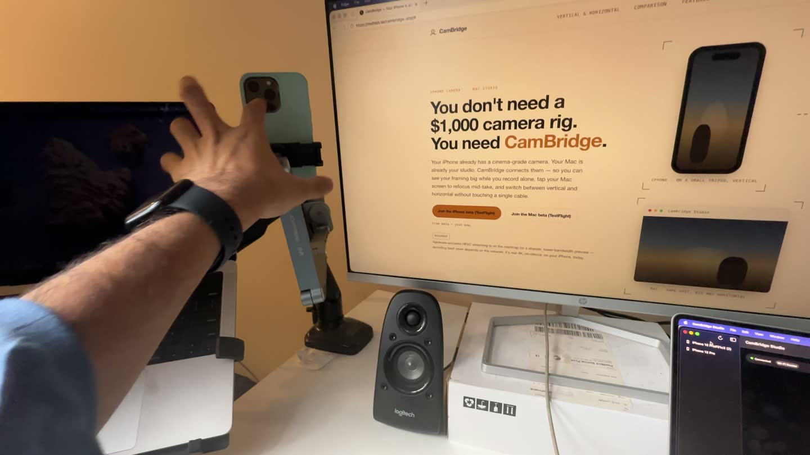

Streaming and recording guide
How to use your iPhone as a webcam in OBS on your Mac
OBS Studio on a Mac can use your iPhone as a camera. You do not need an extra app: Apple's Continuity Camera makes the iPhone show up in OBS like a webcam, wired or wireless.
This guide shows the setup, what to check when the iPhone does not appear, and when a recording app is the better tool than a live OBS source.

Set up the iPhone as a camera in OBS
This uses Continuity Camera, which is part of macOS and iOS (Apple support: Continuity Camera).
Check the requirements
Apple lists iOS 16 or later on an iPhone XR or later, macOS Ventura 13 or later, and both devices signed in to the same Apple Account with two-factor authentication. Wi‑Fi and Bluetooth must be on for wireless use.
Mount the iPhone
Put the iPhone near the Mac on a mount or stand, locked, stable, with the rear cameras facing you. Landscape lets apps pick it automatically; portrait also works.
Give OBS camera access
The first time, macOS asks if OBS may use the camera. If you said no, open System Settings, then Privacy & Security, then Camera, and turn OBS on. Restart OBS.
Add a Video Capture Device source
In OBS, click + under Sources, choose Video Capture Device, name it, and pick your iPhone from the Device list.
Set the size and position
Open the source properties to check the resolution, then drag or right-click the source to fit it to the canvas.
Plug in a cable for long sessions
Continuity Camera works wired or wirelessly. A USB cable keeps the phone charged and the link steady during a long stream.
iPhone not showing up in OBS?
Most cases come from one of Apple's requirements or from macOS privacy settings. Go through these in order:
- Camera permission. System Settings > Privacy & Security > Camera. OBS must be on. Restart OBS after you change it.
- Same Apple Account. The iPhone and Mac must use the same Apple Account with two-factor authentication.
- Continuity Camera is on. On the iPhone: Settings > General > AirPlay & Continuity (or AirPlay & Handoff).
- Nothing else is in the way. The iPhone must not be sharing its cellular connection, and the Mac must not be sharing its internet. For wireless use, the Mac must not be using AirPlay or Sidecar.
- Lock and mount the phone. If you have not unlocked the iPhone since it restarted, unlock it once, then lock it again.
- Try the cable. Plug the iPhone into the Mac and tap Trust if it asks.
- Update and restart. Install the latest macOS, iOS and OBS updates, then restart both devices.
Still stuck? See Continuity Camera not working on Mac: fixes.
Tips for a better picture in OBS
- Use the rear cameras. They are the better cameras, and Apple's setup expects them to face you.
- Light your face from the front. A small window or lamp in front of you helps more than any setting.
- Check the resolution in the source properties. The canvas size in OBS (Settings > Video) should match what you stream or record.
When you want to record, not stream
A webcam source in OBS is a live feed. It is the right tool for a stream or a screen recording with your face in the corner. If you are filming yourself for a YouTube video, a course or a short, you may want the iPhone's own recording instead.
That is what CamBridge does. The iPhone records the 4K file on the phone. Your Mac shows the live view in a big window, and you control focus, exposure, zoom, lens and record from the Mac. When you stop, the file copies to a folder on the Mac. Read more in how to control your iPhone camera from your Mac.
Limits to know about
CamBridge is not a webcam or a virtual camera, so it does not appear as a source in OBS. Use Continuity Camera for that. Continuity Camera works with one iPhone and one Mac at a time. CamBridge is a beta for iPhone and Mac only.
FAQ
Does Continuity Camera work with OBS?
Yes. On a Mac, the iPhone shows up in OBS as a Video Capture Device, like any other camera, once the iPhone is mounted and the requirements are met.
Why does my iPhone not show up in OBS?
Check Apple's requirements first: same Apple Account with two-factor authentication, Wi‑Fi and Bluetooth on, no Personal Hotspot on the iPhone, and the Mac not using AirPlay or Sidecar. Then check that OBS has camera access in Privacy & Security, lock and mount the iPhone, and plug it in with a cable.
Can I use the iPhone wired with OBS?
Yes. Apple says Continuity Camera works wired or wirelessly. Over USB, the iPhone must trust the Mac.
Can I use the iPhone as a microphone in OBS?
Yes. The iPhone mic is offered to apps as a separate input. In OBS, add an Audio Input Capture source and pick the iPhone.
Does CamBridge show up as a camera in OBS?
No. CamBridge is not a webcam or virtual camera. It is for recording with the iPhone and controlling it from the Mac. For an OBS camera source, use Continuity Camera.
Do I need an app on the iPhone?
Not for Continuity Camera. It is built into iOS and macOS, and it is on by default.
Try it with your own iPhone and Mac
CamBridge is a free TestFlight beta. iPhone needs iOS 17 or later. Mac needs macOS 14 or later. No account, no cloud.